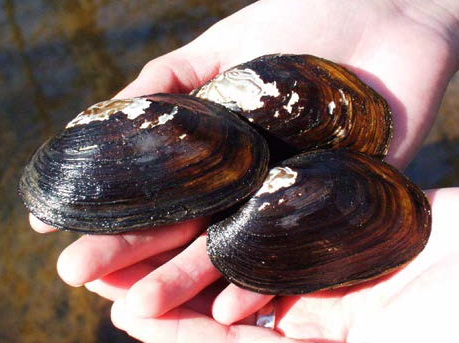
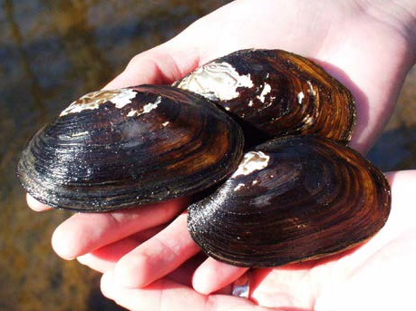

Carolina Heelsplitter
 (Photo on left from U.S. Fish and Wildlife service, right from SC's Dept. of Natural Resources)
(Photo on left from U.S. Fish and Wildlife service, right from SC's Dept. of Natural Resources)Description
The shell of the Carolina heelsplitter has a color range of greenish-brown to dark brown. The shell is in the shape of an ovate trapezoid (NC Wildlife Resources, 2016).Habitat and Location
The Carolina heelsplitter can be found in North Carolina and South Carolina. In North Carolina it can be found in Mecklenburg, Richmond, and Union counties (NC Wildlife Resources, 2016).
The Carolina heelsplitter requires cool, clean water to survive. Therefore any body of water that has lots of vegetation and a silt-free bottom would be ideal habitat (NC Wildlife Resources, 2016).
Reasons For Endangerment
Due to poor water quality and habitat loss this species has become endangered. It is especially sensitive to pollutants in the river during the early stages of its life cycle (NC Wildlife Resources, 2016).References
Service, U.S. Fish and Wildlife. "Raleigh Ecological Services Field Office." Raleigh Ecological Services Field Office. U.S. Fish & Wildlife Service, n.d. Web. 26 Oct. 2016.
Service, U.S. Fish and Wildlife. "Species Profile for Carolina Heelsplitter (Lasmigona Decorata)." Species Profile for Carolina Heelsplitter (Lasmigona Decorata). U.S. Fish & Wildlife Service, n.d. Web. 26 Oct. 2016.